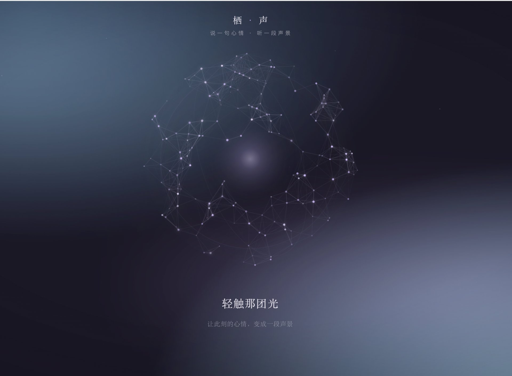
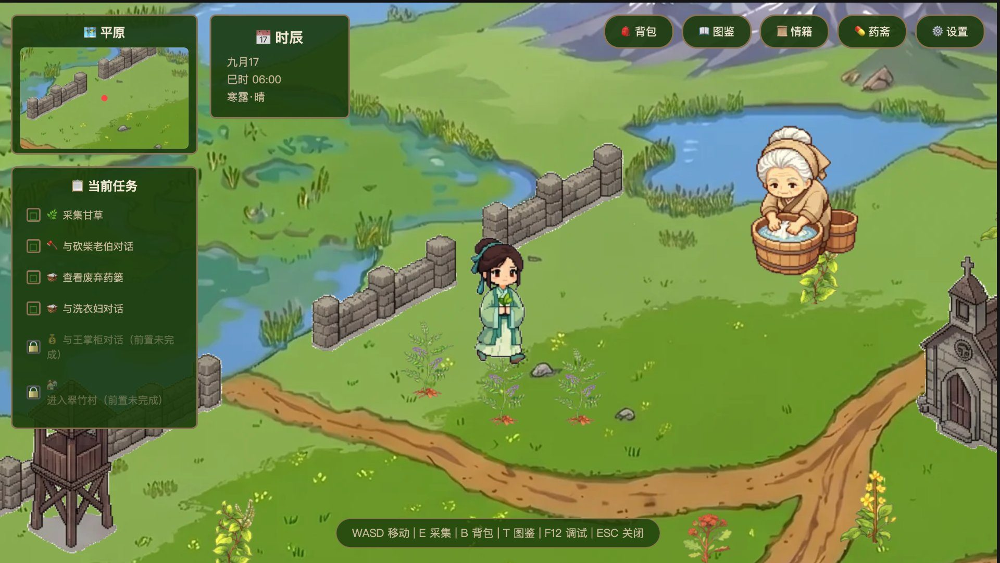
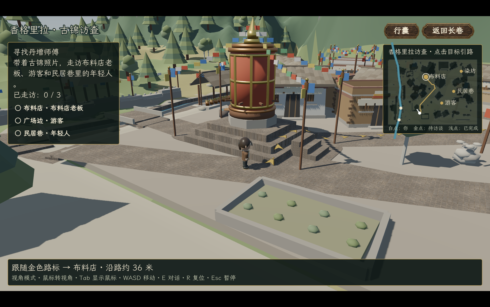
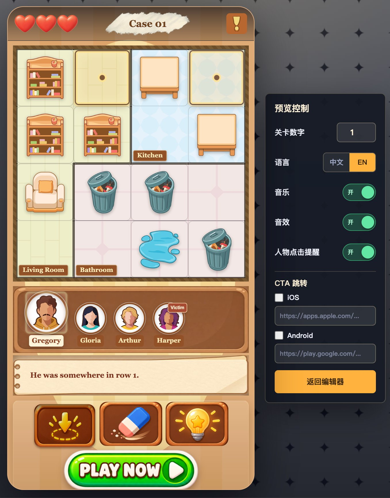
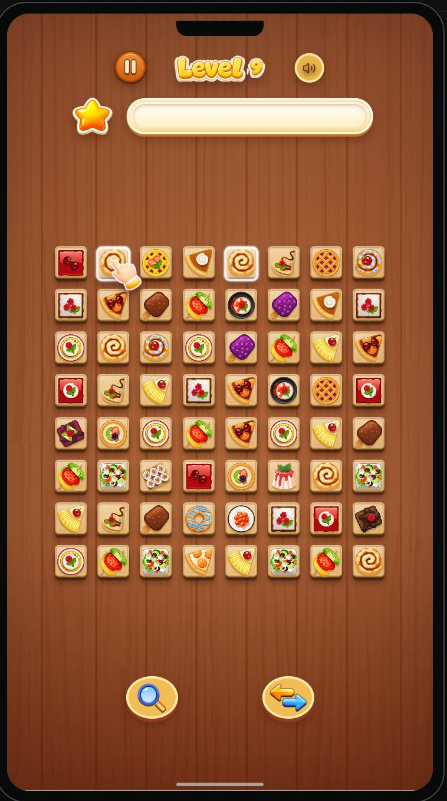
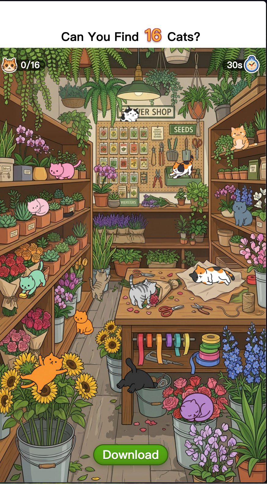
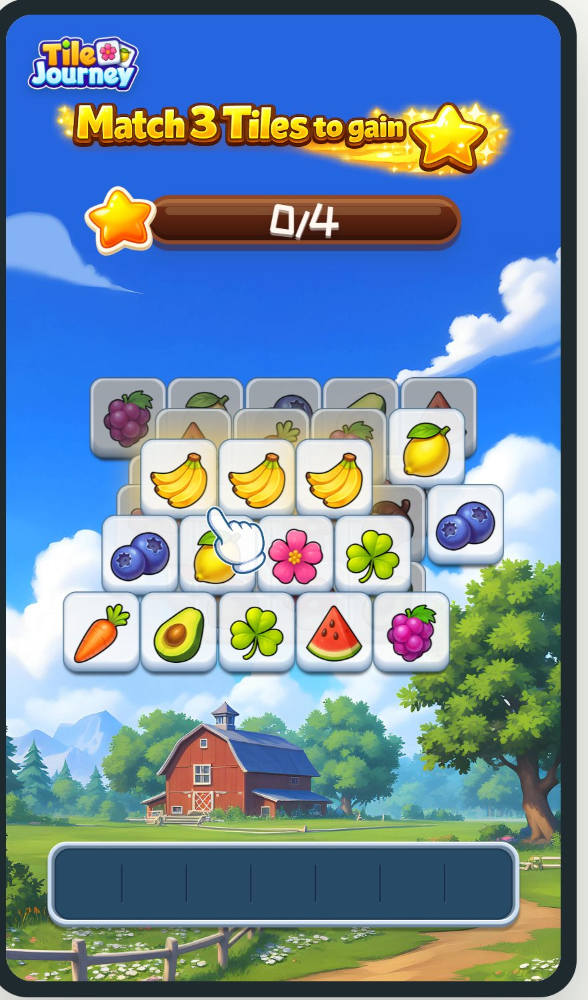
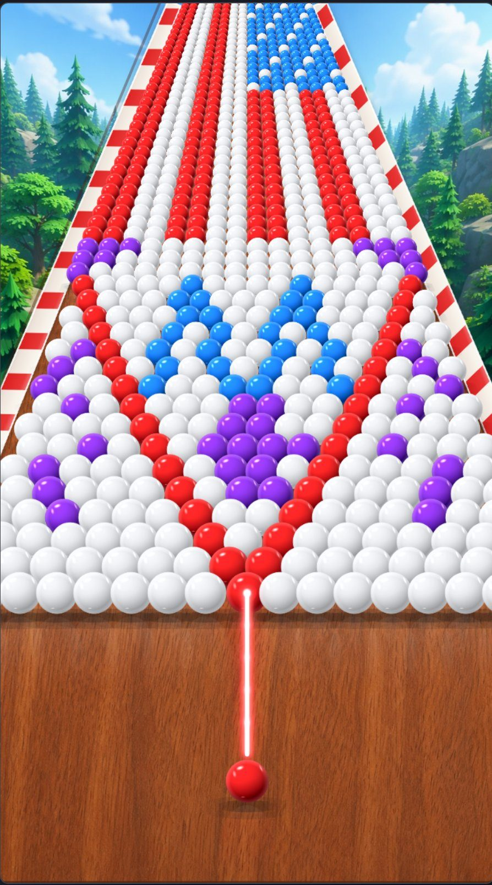
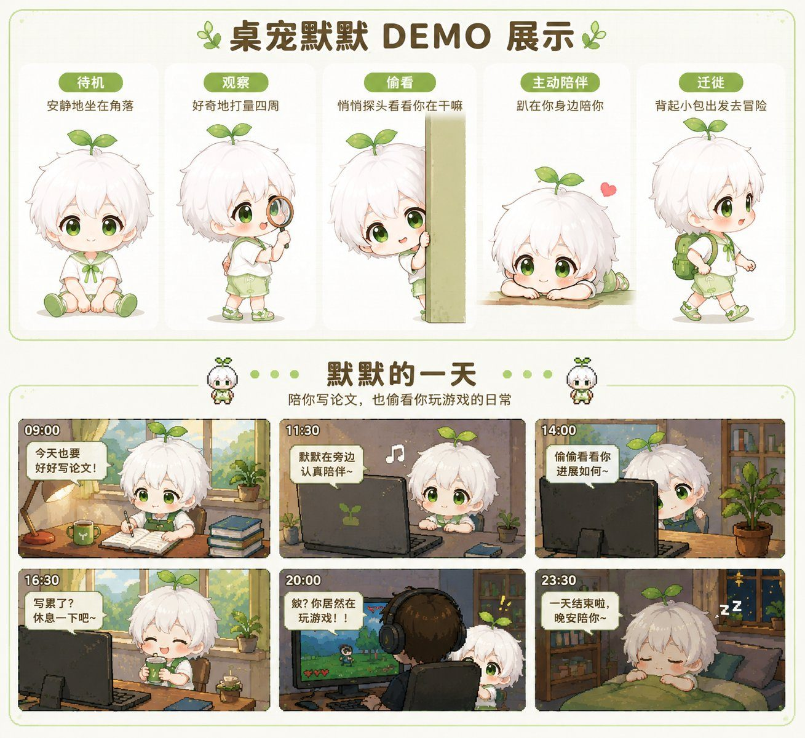

01栖声
白噪音合成器
此刻场景CODING
01 / WHO I AM
成绩优异的计算机学生，也是一个对世界保持感受力的人。
我享受把新技术变成具体作品的过程：从构思、设计到实现，也愿意慢下来写点文字、做点手工、去陌生地方走走。技术是我的工具，而真实、有趣和创造力是我希望作品留下的东西。
02 / THINGS I MADE
从游戏、学习工具到陪伴型软件与个人网站。

01白噪音合成器

02腾讯云游戏黑客松 · 全球三等奖
古风田园游戏 · 腾讯云游戏黑客松全球三等奖

03山河信使
点击复制下载链接 · Windows
3D 探索游戏 · 5 张地图 · AI NPC 互动小游戏
与西安交通大学民族研究学院、软件学院合作开发。
Windows 试玩版 · 点击卡片自动复制网盘链接与提取码 jbei





实习项目 · 5 款休闲游戏

05桌宠软件
Vibe O！
模拟购物软件
03 / JOURNAL
项目制作记录与算法学习笔记，在飞书文档中持续整理。
04 / OFF THE SCREEN
"我希望这里记录的不只是结果，也有那些路上的灵感、笨拙尝试和真实喜欢。"
05 / EXPERIENCE
量化研究员实习
负责因子挖掘、策略搭建与回测，并主导搭建智能体投研链路。
AI 互动广告制作实习
借助 AI 开发工具制作 HTML5 试玩广告，对接投放、美术与策划，并沉淀可复用的 Prompt 模板和 SOP。